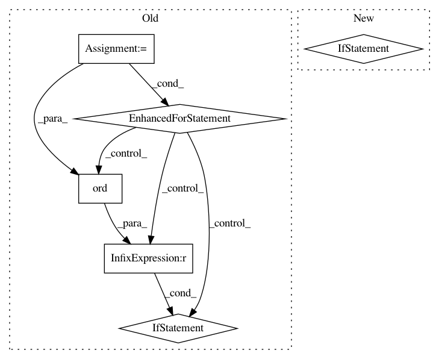

7f20bc80922c8f24ceece7e335750655179090d2,skbio/io/_base.py,,_decode_qual_to_phred,#Any#Any#Any#,34
Before Change
"https://github.com/biocore/scikit-bio/issues/719"])
phred = []
for c in qual_str:
score = ord(c) - phred_offset
if phred_range[0] <= score <= phred_range[1]:
phred.append(score)
else:
raise ValueError("Decoded Phred score %d is out of range [%d, %d]."
% (score, phred_range[0], phred_range[1]))
return phred
def _encode_phred_to_qual(phred, variant=None, phred_offset=None):
phred_offset, phred_range = _get_phred_offset_and_range(
variant, phred_offset,
["Must provide either `variant` or `phred_offset` in order to encode "
"Phred scores.",
"Encoding Solexa quality scores is not currently supported. "
"Please see the following scikit-bio issue to track progress "
"on this:\n\t"
"https://github.com/biocore/scikit-bio/issues/719"])
qual_chars = []
for score in phred:
if score < phred_range[0]:
raise ValueError("Phred score %d is out of range [%d, %d]."
% (score, phred_range[0], phred_range[1]))
if score > phred_range[1]:
warnings.warn(
"Phred score %d is out of targeted range [%d, %d]. Converting "
"to %d." % (score, phred_range[0], phred_range[1],
phred_range[1]), UserWarning)
score = phred_range[1]
qual_chars.append(chr(score + phred_offset))
return "".join(qual_chars)
def _get_phred_offset_and_range(variant, phred_offset, errors):
if variant is None and phred_offset is None:
raise ValueError(errors[0])
if variant is not None and phred_offset is not None:
raise ValueError(
"Cannot provide both `variant` and `phred_offset`.")
if variant is not None:
if variant == "sanger":
phred_offset = 33
phred_range = (0, 93)
After Change
"https://github.com/biocore/scikit-bio/issues/719"])
qual = np.fromstring(qual_str, dtype=np.uint8) - phred_offset
if np.any((qual > phred_range[1]) | (qual < phred_range[0])):
raise ValueError("Decoded Phred score is out of range [%d, %d]."
% (phred_range[0], phred_range[1]))
return qual
def _encode_phred_to_qual(phred, variant=None, phred_offset=None):
In pattern: SUPERPATTERN
Frequency: 3
Non-data size: 6
Instances
Project Name: biocore/scikit-bio
Commit Name: 7f20bc80922c8f24ceece7e335750655179090d2
Time: 2015-04-29
Author: ebolyen@gmail.com
File Name: skbio/io/_base.py
Class Name:
Method Name: _decode_qual_to_phred
Project Name: commonsense/conceptnet5
Commit Name: 3a390e0add5588c3b4cb2cb29f14314b8b96e14b
Time: 2014-03-13
Author: rob@luminoso.com
File Name: conceptnet5/web_interface/utils.py
Class Name:
Method Name: get_sorted_languages
Project Name: emedvedev/attention-ocr
Commit Name: 8858bd041f8d0fac28a45db47da4764f0dee3e52
Time: 2017-08-10
Author: edward.medvedev@gmail.com
File Name: aocr/util/data_gen.py
Class Name: DataGen
Method Name: convert_lex